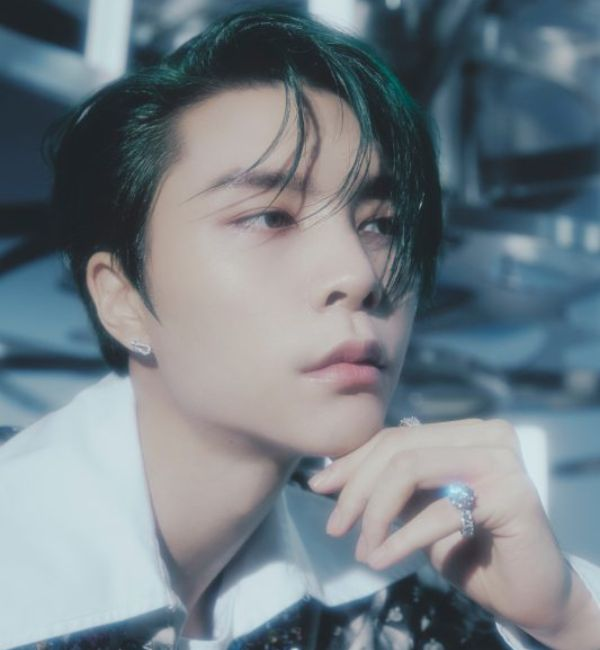

Let's Meet NCT 127 Members !
- Stage Name: Taeyong (태용)
- Birth Name: Lee Tae Yong (이태용)
- Position: Leader, Main Rapper, Main Dancer, Visual, Center, Face of the Group
- Birthday: July 1, 1995
- Zodiac Sign: Cancer
- Place of Birth: Seoul, South Korea
- Height: 175 cm (5’9″)
- Weight: 58 kg (128 lbs)
- Blood Type: O
- Instagram: @taeoxo_nct
- Youtube: TY TRACK
- Tiktok: tik_tyong
- Stage Name: Taeil (태일)
- Birth Name: Moon Tae Il (문태일)
- Position: Main Vocalist
- Birthday: June 14, 1994
- Zodiac Sign: Gemini
- Place of Birth: Seoul, South Korea
- Height: 171 cm (5’7″)
- Weight: 60 kg (132 lbs)
- Blood Type: O
- Speciality: Guitar
- Instagram:@mo.on_air

- Stage Name: Johnny (쟈니)
- Korean Name: Seo Young Ho (서영호)
- English Name: John Jun Suh
- Position: Lead Dancer, Sub Rapper, Sub Vocalist
- Birthday: February 9, 1995
- Zodiac Sign: Aquarius
- Place of Birth: Chicago, Illinois, USA
- Height: 185 cm (6’1″)
- Weight: 70 kg (154 lbs)
- Blood Type: B
- Speciality: Rapping, dancing
- Instagram: @johnnyjsuh
- Stage Name: Yuta (유타)
- Birth Name: Nakamoto Yuta (中本悠太)
- Position: Lead Dancer, Sub Vocalist, Sub Rapper
- Birthday: October 26, 1995
- Zodiac Sign: Scorpio
- Place of Birth: Osaka, Japan
- Height: 176 cm (5’9″)
- Weight: 60 kg (132 lbs)
- Blood Type: A
- Instagram: @yuu_taa_1026
- Stage Name: Doyoung (도영)
- Birth Name: Kim Dong Young (김동영)
- Position: Main Vocalist
- Birthday: February 1, 1996
- Zodiac Sign: Aquarius
- Place of Birth: Seoul, South Korea
- Height: 178 cm (5’10″)
- Weight: 60 kg (132 lbs)
- Blood Type: B
- Instagram: @do0_nct
- Stage Name: Jaehyun (재현)
- Birth Name: Jeong Jae Hyun, but he legalized to Jeong Yoon Oh (정윤오)
- Position: Main Vocalist, Lead Dancer, Sub Rapper, Visual
- Birthday: February 14, 1997
- Zodiac Sign: Aquarius
- Place of Birth: Seoul, South Korea
- Height: 180 cm (5’11″)
- Weight: 63 kg (139 lbs)
- Blood Type: A
- Instagram: @_jeongjaehyun
- Stage Name: Jungwoo (정우)
- Birth Name: Kim Jung Woo (김정우)
- Chinese Name: Jin Ting You (金廷祐)
- Position: Lead Vocalist, Lead Dancer
- Birthday: February 19, 1998
- Zodiac Sign: Pisces
- Height: 180 cm (5’11″)
- Weight: 58 kg (128 lbs)
- Blood Type: AB
- Sub-Unit: NCT U
- Instagram: @sugaringcandy
- Stage Name: Mark (마크)
- Birth Name: Mark Lee
- Korean Name: Lee Min Hyung (이민형)
- Position: Main Rapper, Main Dancer, Sub Vocalist
- Birthday: August 2, 1999
- Zodiac Sign: Leo
- Place of Birth: Toronto, Canada
- Height: 176 cm (5’9″)
- Weight: 61 kg (134 lbs)
- Blood Type: A
- Instagram: @onyourm__ark.
- Stage Name: Haechan (해찬)
- Birth Name: Lee Dong Hyuck (이동혁)
- Position: Main Vocalist, Lead Dancer, Maknae
- Birthday: June 6, 2000
- Zodiac Sign: Gemini
- Place of Birth: Seoul, South Korea
- Height: 174 cm (5’8.5″)
- Weight: 58 kg (128 lbs)
- Blood Type: AB
- Instagram: @haechanahceah